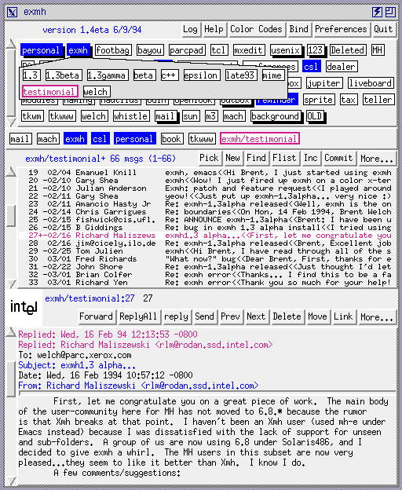
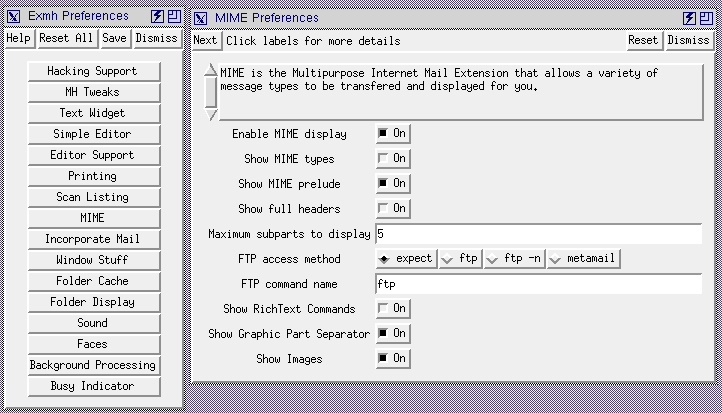

The exmh display is divided into three main displays. At the top is an array of labels that correspond to each of your toplevel mail folders. These are highlighted in different ways to indicate their state. The blue labels have new messages in them. The labels with a drop shadow have folders nested under them. In the picture, the exmh folder has a little popup that lists the folders nested under it. The current folder is outlined in red. If you are refiling messages into another folder, then the target folder will be yellow. The Color Legend entry under the Help... menu brings up a key that explains the highlighting. On a monochrome screen, the highlighting is done with bitmaps, underlining, and stippling in order to provide similar feedback.
(The picture is not up-to-date, but it is pretty close. The current exmh version is 1.6beta, which was released in March 1995.)
Right under the main folder label display is a cache of recently visited folders. These are equivalent to the labels in the main display and are just there for commonly used folders. (Right now this is managed in a strict LRU fashion, and that needs to be improved.)
The middle part of the display shows the results of the MH scan command that summarizes the messages in your folder. Again, color highlighting is used to indicate the current message, unseen messages, and messages that are marked for delete or refile into another folder. These pending changes are committed when you click the Commit button, or when you change folders and you have the autoCommit preference item chosen.
The bottom part of the display shows the current message. You can set up different headers to have different color highlights. Some of the less interesting headers start off scrolled off the top of the display. An image of the person that sent the message, or possibly their company's logo, may be displayed just above and to the left of the message area.

There are so many knobs and dials, in fact, that they are divided into sections that correspond to various modules of the implementation. The whole thing is table driven and you might be interested in using it for your own TK application. The following shows the toplevel preferences window and one of the module-specific preferences windows.
